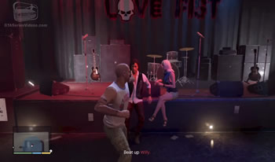
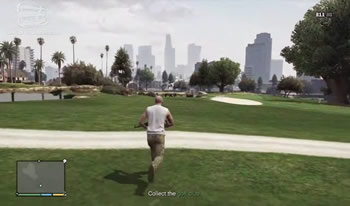
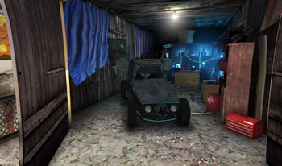

Estranhos e Doidos são várias missões secundárias que podem ser feitas pelo jogador a qualquer momento do jogo a partir de sua disponibilidade. Essas missões não fazem parte da história principal.
Índice
- Morte em Alto Mar
- Nas Profundezas
- Legalize Já – Michael
- Legalize Já - Trevor
- Legalize Já - Franklin
- Legalize Já - Pega
- Legalize Já - Puxa
- Paparazzi
- Paparazzi - Vídeo Íntimo
- Paparazzi - A Parceria
- Paparazzi - O Chilique
- Paparazzi - Beck Real
- Paparazzi - Caindo na Real
- Tiro ao Alvo
- Presa Fácil
- Avaliação de Risco
- Risco de Liquidez
- Risco Calculado
- Risco Incalculável
- Uma Jovem Estrela de Vinewood
- Buscando a Verdade
- Aceitando a Verdade
- Incorporando a Verdade
- Caçando a Verdade
- Usando a Verdade
- Entregando a Verdade
- Exercitando a Verdade
- Desaprendendo a Verdade
- Trabalho de Turnos
- Comissão Extra
- Fechando o Negócio
- Brincando com Fogo
- Quebra de Contrato
- Exercitando Demônios - Michael
- Exercitando Demônios - Franklin
- Exercitando Demônios - Trevor
- Conhecendo Maude
- Patrulha de Fronteira Civil
- Saudações Estadunidenses
- O Blues do Patrulheiro
- Nigel e Sra. Thornhill
- Lembranças - Willie
- Lembranças - Tyler
- Lembranças - Kerry
- Lembranças - Mark
- Lembranças - Ai Di Napoli
- Lembranças - O Último Ato
- Insólito
- A Fronteira Final
- Quebrando o Galho
- Quebrando Outro Galho
- Quebrando Galho de Novo
- Ainda Quebrando o Galho
- Quebrando o Último Galho
- Matança 1
- Matança 2
- Matança 3
- Matança 4
- Matança 5
1.1 Morte em Alto Mar
Para fazer essa missão você precisa completar a missão Jogada Ensaiada e comprar a Doca de Coleções por Sonar. Após você efetuar a compra aparecerá uma interrogação ?
na doca em Paleto Cove. Aproxime-se da loira que está ali perto. Abigail pergunta a Michael se ele é fã de Frank Mathers e ele finge que sim.
Frank Mathers era um apresentador de TV que era apaixonado pelo espaço, mas mudou sua paixão para o fundo do mar. Abigail diz que ele morreu quando o submarino dele quebrou durante uma missão de salvamento do tubarão branco de San Andreas. Os restos mortais dele nunca foram encontrados. Michael diz que ficou sabendo sobre uma suposta sabotagem na câmara de ar. Abigail responde dizendo que isso nunca foi provado e pede ajuda de Michael para provar isso coletando fragmentos do submarino, assim ela poderia provar que a morte de Frank foi acidental e ganhar dinheiro do seguro de vida.
1.2 Nas Profundezas
Após o jogador coletar as 30 partes do submarino, Michael receberá a ligação de Abigail. Algum tempo depois ela reaparecerá na Doca de Coleções por Sonar. Ela se entusiasma com a vinda de Michael, mas não fica nada feliz ao saber que as peças do submarino provam que houve uma sabotagem.
Abigail tenta colocar a culpa na primeira esposa de Frank Mathers (ela é a segunda) e também culpa a polícia. Ela vai embora e diz que comunicará o FIB. Michael então pede a recompensa prometida, então ela dá 10 dólares a ele junto a uma foto com um autógrafo de Frank. Quando a cena acaba, o jogador pode decidir entre matar Abigail ou deixá-la ir embora.
2.1 Legalize Já - Michael
Complete a missão Agravantes
e Quebrando Galho
para liberar a missão Legalize Já do Michael dos Estranhos e Doidos. Vá para a praça Legion Square até a interrogação ?
indicada no mapa. Vá até a bancada onde tem um homem sentado com a faixa Legalize Weed
. Michael sede ao pedido de Barry e experimenta a droga oferecida por ele.
Michael não tem o passaporte para o nirvana
prometido por Barry. Ao invés disso sua visão fica embaçada e começa a ver Aliens correndo e atirando em sua direção. O jogador terá uma minigun com munição ilimitada disponível e terá que eliminar esses aliens. Para completar a missão em 100%, complete a missão com o mínimo de danos à saúde e ao colete a prova de balas, e mate 7 aliens em 10 segundos.
2.2 Legalize Já - Trevor
Essa missão dos Estranhos e Doidos protagonizada por Trevor é desbloqueada após o jogador completar a missão Dois é Bom, Três é Foda
. Encontre Barry no mesmo lugar que Michael encontrou, na praça Legion Squareno centro de Los Santos. Trevor experimenta a droga e começa a ver palhaços assassinos.
Use a escopeta de combate para eliminá-los. Tente explodir as vans dos palhaços antes que eles desçam, pois isso irá facilitar o cumprimento da missão. Para conseguir a medalha de ouro e 100% de conclusão, destrua quatro vans antes de sair palhaços (Golpe preventivo) e elimine seis palhaços enquanto estão dançando (O melhor dançarino).
2.3 Legalize Já - Franklin
Para desbloquear essa missão dos Estranhos e Doidos, você precisa completar a missão Dois é Bom, Três é Foda
. Vá com o Franklin para a Sinner Street, onde está o símbolo ?
ou B?
. Lá você conhecerá Barry, que está fazendo uma campanha de legalização da maconha. Franklin fuma um baseado, mas não sente nenhum efeito.
A polícia então aparece e Franklin tem que despistá-los. Algum tempo depois Barry envia uma mensagem indicando os lugares onde Franklin deve pegar a mercadoria e então ele é adicionado como novo contato de Franklin. Depois aparecem pontos no mapa na área de La Puerta, Maze Bank Center, e Murrieta Heights, onde o jogador deverá procurar pelos veículos.
2.4 Legalize Já - Pega
Desbloqueie essa missão após completar Legalize Já – Franklin
. Vá para área de círculo verde que está indicada no mapa,na região da madeireira em East Los Santos. Dentro desta área verde em Murrieta Heights, encontre a caminhonete Bravado Duneloader. Franklin liga para Barry quando o jogador encontra a caminhonete. Leve a caminhonete até Vespucci dentro do prazo de tempo. Cuidado coma polícia, pois você precisará despistá-la.
Siga a rota amarela traçada no mapa e deixe o carro no local indicado. Franklin liga novamente para Barry e você precisa sair da área. Para ter 100% de sucesso e ganhar a medalha de ouro, complete a missão no tempo de até 2 minutos e 45 segundos e não seja perseguido pela polícia (Resultado indesejado). Para não ganhar nenhum nível de procura e conseguir a medalha de ouro, vire à direita logo que entrar no carro e vá em direção ao rio Los Santos River e fuja por ele ou encontre outro caminho que não chame a atenção da polícia.
2.5 Legalize Já - Puxa
Nessa missão você tem que ir até os dois grandes círculos verdes no mapa e encontrar os carros com marijuana. Entre no centro de reciclagem Rogers Salvage & Scrap em La Puerta. Lá dentro tem um carro com a mercadoria, mas o carro não sai do lugar, está quebrado. Você tem que pegar o towntruck e guinchar o emperor. Reboque o carro até o apartamento do Barry, seguindo a rota amarela. Depois saia da área.
Complete a missão em 100% e ganhe a medalha de ouro levando o carro em menos de 1 minuto e meio e não deixe o carro desengatar do guincho.
3.1 Paparazzi
Para acessar a missão Paparazzi, complete a missão Qubrando Galhos
dos Estranhos e Doidos. Aparecerá um ícone ?
na Eclipse Boulevard. Chegando lá Franklin conhecerá o paparazzi Beverly, que está tentando tirar fotos de PG Jackson. Suba na moto de Beverly e persiga a limousine da famosa artista Miranda Cowan para que ele tire fotos dela. Chegando na North Rockford Drive aparecerá uma outra moto com outro fotógrafo, Madison. Emparelhe com a moto dele para que o Beverly o derrube, ou derrube por conta própria.
Conclua a missão em 100% com medalha de ouro fazendo com que o Beverly derrube o rival na primeira tentativa (Botando a baixo) e ajude o Beverly a tirar e analisar 3 fotos (Foto perfeita).
3.2 Paparazzi - Vídeo Íntimo
Nessa missão você tem que ir até a marca P?
em frente ao The Gentry Manor Hotel para encontrar o Beverly, que está como stalker da Poppy Mitchell, jovem estrela de Vinewood. Vá para a entrada lateral do hotel e vá até a piscina. Beverly vê Poppy chegando e passa a câmera para Franklin. Mude a visão para a câmera e filme Poppy e Justin juntos no jardim do hotel. Eles percebem que estão sendo filmados e mandam os seguranças atrás do Franklin. Fuja e siga o Beverly até o carro dele. Filme o carro de Poppy enquanto ela persegue o carro de Beverly, mantendo o máximo de foco possível no rosto dela. O enquadramento está bom quando a tela fica verde.
Conclua a missão em 100%, ganhando a medalha de ouro, pulando na piscina quando estiver fugindo dos seguranças (Mergulho rápido) e faça fotos nítidas de Poppy durante a perseguição (O investimento). Para isso, tire fotos quando ela se levantar dentro do carro, com a cabeça para cima do pára-brisas.
3.3 Paparazzi - A Parceria
Nessa missão o jogador não precisa fazer nada além de ir ao ponto indicado no mapa com a marca P?
no estacionamento do restaurante Spitroasters Meathouse na Eclipse Boulevard. Beverly tira uma foto e sai de surpresa de uma lata de lixo. Ele diz que fará parte de um reality show e pediu para que Franklin tire fotos para ele enquanto ele está no programa.
3.4 Paparazzi - O Chilique
Algum tempo depois do jogador concluir a missão Paparazzi – A Parceria
, Beverly liga para Franklin e você deve atender. Ele informa a Franklin duas oportunidades para tirar fotos de celebridades, que aparecem no mapa como dois grandes círculos verdes. Vá para um dos círculos em Vinewood Boulevard na frente do Doppler Theater. Franklin informa para Beverly que Poppy Mitchell está fugindo da polícia de carro. Vá em direção ao ponto no radar na Clinton Avenue e encontre o carro rosa da Poppy, perseguido pela polícia de Los Santos. Ela acelera na Baytree Canyon e vai até Vinewood Hills, virando em North Conker Avenue. Siga ela de perto.
Ela desce a Elgin avenue e lá acaba em uma árvore. Ela saia bêbada do carro e é presa pela polícia. Tire uma foto de Poppy sendo algemada e mande para Beverly. Depois saia do local para não ser preso e assim concluir a missão. Conclua a missão em 100% com medalha de ouro ficando próximo ao carro da Poppy durante a perseguição (De saco cheio) e tire apenas uma foto de Poppy, e apenas quando ela estiver algemada (Diva alterada).
3.5 Paparazzi - Beck Real
Após concluir a missão Paparazzi – A Parceria
, Beverly enviará a Franklin novas informações de fotos para tirar, aparecendo dois novos círculos verdes no mapa. Vá para este ponto em Mirror Park na Nikola Avenue. Franklin tem que tirar fotos da princesa Georgina da Inglaterra com traficantes de drogas. O melhor lugar para tirar a foto é de cima do Chicos Hypermarket, onde ninguém perceberá a presença do Franklin. Tire a foto, mande para Beverly e saia da área. Franklin ligará para Beverly e depois disso a missão será concluída.
Conclua a missão em 100% com medalha de ouro tirando a foto sem ser descoberto (O agressor silencioso) e tire foto da princesa comprando drogas (Um imprevisto daqueles).
3.6 Paparazzi - Caindo na Real
Esta é a última missão da série Paparazzi dos Estranhos e Doidos. Vá até o ponto P?
na frente do The Generic na Eclipse Boulevard em West Vinewood. Beverly está com a equipe de filmagens do seu reality show e Franklin interrompe a gravação, cobrando Beverly sobre o pagamento das fotos. Beverly simplesmente o ignora. A missão então acaba. Você pode escolher entre matar Beverly e sua equipe ou simplesmente ir embora.
Para ganhar a medalha de ouro e concluir a missão em 100%, mate Beverly e sua equipe com um único tiro, usando granda, rpg ou outros explosivos.
4.1 Tiro ao Alvo
Essa missão é liberada quando o jogador completa a missão principal Ron Noiado
. Leve Trevor até Sandy Shore na interrogação ?
no mapa na Marina Drive. Trevor encontra Cletus, um velho amigo que vive caçando com um rifle.
Siga Cletus e atire nas antenas parabólica que estão no seu campo de visão. Pegue o Dune Buggy dele e siga a rota amarela com ele até o motel abandonado em Algonquin Boulevard. Agora você terá que acertar o pneu de três carros em movimento na estrada. Volte até o Cletus e siga-o para o topo do motel. Lá você terá que acertar três coiotes. Conclua a missão em 100% e ganhe a medalha de ouro matando os coiotes com um só tiro (2 por 1), acerte 3 pneus com no máximo 4 tiros (Véio! Véio!) e acerte as 3 antenas com apenas 3 tiros (Um mau sinal).
4.2 Presa Fácil
Nessa missão você tem que se encontrar com Cletus na Paleto Forest, perto de Paleto Bay indo até a marca C?
no mapa. Siga o Cletus enquanto ele anda pela floresta. Os cervos por perto aparecerão no radar como um ponto vermelho. Entre no modo furtivo vá em direção ao circulo até visualizar o animal. Mire e atire no coração, preferencialmente.
Somente os cervos machos servem. Não atire em fêmeas (que não tem chifres) pois se não a missão acabará. Utilize o apito para atrair novos cervos. Cace um último cervo, tire uma foto dele e mande para o celular do Cletus. Para concluir a missão em 100% e conquistar a medalha de ouro, não seja detectado por nenhum cervo (A favor do vento) e acerte 3 cervos com tiros no coração (O caçador de corações).
5.1 Avaliação de Risco
Complete a missão Leve Turbulência
para desbloquear essa missão dos Estranhos e Doidos. Vá com o personagem Franklin para o ícone ?
perto do observatório Galileo na região de Vinewood e chegue perto do cachorro. Franklin começa a conversar com o animal feito um idiota de filme americano. Você tem que seguir o cachorro, que te levará até um homem pendurado de cabeça para baixo com um pára-quedas em um árvore. Esse é Dom, uma paraquedista maluco. Siga ele até um helicóptero, que subirá bem alto. Você terá que saltar de paraquedas com o Dom. Salte e deixe o Franklin cair por cerca de 7 segundos e depois abra o paraquedas. Tente pousar bem no centro do círculo laranja no topo do Monte Chiliad.
Siga os pontos azuis e monte na bicicleta. Pedale montanha a baixo, passando pelos checkpoints na Reserva Natural Monte Chiliad. No final da corrida Dom fala pra Franklin o encontrar no aeroporto de Los Santos. Ganhe a medalha de ouro com 100% de conclusão da missão caindo por sete segundos antes de abrir o paraquedas (Queda livre), fique dois segundos no ar durante a corrida de bicicleta (Manobras radicais) e ganhe a corrida de bicicleta contra o Dom (O soberano decadente).
5.2 Risco de Liquidez
Leve Franklin até uma das entradas do aeroporto internacional de Los Santos, onde há um ícone D?
. Dom está lá com um Nagasaki Blazer. Suba no outro e siga ele. Entre no avião de carga através da rampa de acesso. Depois que o avião cargueiro levantar voo, Dom irá pular de cima do quadriciclo e você deverá pular depois. Tente rodar o quadriciclo no ar 8 vezes antes de soltá-lo, pois este é um dos objetivos para ganhar a medalha de ouro.
Você pode escolher entre cair direto na água com o ATV ou abrir o paraquedas e aterrissar no ponto indicado. Ganhe a medalha de ouro e complete a missão em 100% dando oito giros no ar com o veículo (Cortando o céu) e sobreviva a uma aterrisagem na água sem abrir o paraquedas (Caindo que nem chumbo).
5.3 Risco Calculado
Nessa missão você precisa levar Franklin até o topo do prédio Maze Bank Tower. Para isso, use um helicóptero ou outro veículo aéreo, chegando ao ponto D?
. Encontre com Dom na beira do prédio. Pule do prédio e aterrisse sobre o caminhão em movimento na Power Street.
Conclua a missão em 100% e ganhe a medalha de ouro caindo por oito segundos antes de abrir o paraquedas (Abusado) e aterrisse perfeitamente na parte de trás do caminhão (Na mosca).
5.4 Risco Incalculável
Para desbloquear esta missão, complete todos os saltos de paraquedas. Essa é a última missão dos Estranhos e Doidos com a participação do Dom. Vá até o ícone D?
, encontre o cachorro falante perto do reservatório nas montanhas Tataviam e vá até Dom, que está prestes a pular de cima da represa.
Os dois conversam brevemente, então Dom se joga para a morte. Pegue o pára-quedas e pule atrás dele e abra imediatamente. Para ganhar a medalha de ouro não há segredo. Basta sobreviver a queda (Salto da fé).
6.1 Uma Jovem Estrela de Vinewood
Encontre todos os 50 fragmentos de cartas para desbloquear a missão Uma Jovem Estrela em Vinewood dos Estranhos e Doidos. Os fragmento de cartas podem ser coletador por qualquer um dos três protagonistas, mas no final você terá que alternar para o Franklin. Após ler a carta de confissão, aparecerá uma mensagem dizendo que a identidade do assassino foi revelada. Após tudo isso aparecerá um ícone ?
na região de Richman, na Hangman Avenue. Siga para a mansão que está no local indicado e então vá para a parte de trás, na piscina, onde você encontrará Peter Dreyfuss fazendo meditação.
O sujeito não entende porque Franklin está ali, até que vê a foto de Leonora Johnson na mão dele. Dreyfuss fala que as regras normais não se aplicam a ele e sai correndo. O jogador pode escolher entre deixar o velho assassino ir embora ou matá-lo. Para ganhar a medalha de ouro você precisa matar ele (Corta!). Ele fugirá em um carro e você terá que persegui-lo para o matar. Para facilitar a sua ação, fure os pneus do carro dele ao chegar na mansão, antes de encontrá-lo.
7.1 Buscando a Verdade
Para desbloquear essa missão complete as missões Pai/Filho
e Quebrando Galho
e faça o teste de identidade no site da Epsilonprogram.com pela internet do celular. Depois de realizar o teste no site da seita religiosa, procure a caminhonete vermelha que aparece no ícone ?
em uma estrada de terra em Raton Canyon, entre os montes Josiah e Cassidy Creek.
Ao encontrar a caminhonete, Michael lê o mantra do livro da seita, então dois homens aparecem e batem nele até deixá-lo inconsciente. Ele acorda semi-nu perto das antenas de rádio-telescópio na Route 68 no deserto Grand Senora. Algum tempo depois Michael recebe uma mensagem de Marnie pedindo uma doação com um link do site da Epsilon solicitando uma doação. Entre no site da Epsilon e doe $500 para destravar a próxima missão (Aceitando a Verdade) que aparecerá algumas horas depois, ou no dia seguinte.
7.2 Aceitando a Verdade
Doe $500 no site da Epsilon Program para desbloquear esta missão. Vá até a esquina da Clinton Avenue com a Alta Street em Vinewood, onde aparece o ícone da seita religiosa, quando aparecer. Entre na porta para começar a cena. Ali é um depósito da Epsilon com o material para seus seguidores. Lá ele conhece Marnie, uma das missionárias da seita.
Ela conta a história dela com a religião e outro membro aparece pedindo $5000 para Michael receber o material de estudos da Epsilon. Entre no site epsilonprogram.com pelo celular do Michael e doe a quantia de $5000, que destravará a próxima missão (Incorporando a Verdade).
7.3 Incorporando a Verdade
Depois de algum tempo o ícone da Epsilon aparecerá no mapa em Grapeseed. Vá até lá pare encontrar Marnie, que está meditando. Michael é chamado por ela de Zolag, que será o nome dele dentro da seita. Ela é chamada de Shupar (Rainha dos Ventos). Shupar diz que irá mandar um e-mail com novas instruções, então saia da área. Michael recebe um e-mail de Marnie com a foto de cinco modelos de carros e motos que foram pedidos por seres superiores para a Epsilon. Os carros são: Pegassi Vacca, Benefactor Surano, Declasse Tornado, Enus Super Diamond e a moto Dinka Double-T.
Você pode comprar os carros Enus, Vacca e Surano nos sites de carros, como o San Andreas Super Autos, mas se você não tiver dinheiro suficiente, terá que encontrá-los na rua. A moto Dinka Double-T pode ser encontrada no estacionamento da sede do Lifeinvader. O Declasse Tornado é mais facilmente encontrado nos bairros mais pobre de Los Santos, na região da casa da tia do Franklin. Ao encontrar os veículos, guarde na garagem da casa da Epsilon em Vinewood, que será mostrada quando você entrar no modelo certo de carro.
7.4 Caçando a Verdade
Após entregar os cinco carros pedidos pela seita Epsilon, a missão Caçando a Verdade
dos Estranhos e Doidos será liberada. Você receberá um novo e-mail enviado pela Marnie. Vá para o ícone da Epsilon em Grapeseed e encontre Marnie com o ator Jimmy Boston – talvez uma sátira do ator Tom Cruise, que segue a cientologia. Eles estão usando um aparelho que detecta atividade extraterrestre. Michael tem que pegar o aparelho e encontrar artefatos alienígenas. Quando você estiver na direção certa de um artefato, uma luz azul acenderá e quando mais barras aparecerem, mais perto você está do objeto.
O primeiro objeto a ser encontrado é uma TV, mas Marnie e Jimmy chegam a conclusão que não é o que procuram. O segundo objeto a ser encontrado é uma bota. Michael a encontra e diz que encontrou o objeto certo. Marnie concorda e o avisa que está pronto para o próximo nível, mas ele terá que doar mais $10000. Entre no site da Epsilon Program e doe $10000 para desbloquear a próxima missão. Para concluir a missão em 100% e ganhar a medalha de ouro, encontre os artefatos alienígenas sem o detector (Use a Força).
7.5 Usando a Verdade
Desbloqueie essa missão doando $10000 no site da Epsilon, como pedido pela Marnie na missão anterior. Algum tempo depois da doação aparecerá um ícone da Epsilon em Vinewood. Você tem que levar Michael até Marnier, que está em frente a um muro com pichações em uma viela. Michael tenta convencer ela que essa seita não é legal e etc, mas ela o desafia a se provar para o grande líder da Epsilon, Cris, comprando as roupas do site da instituição e usá-las por 10 dias.
Após receber a mensagem enviada por Marnie, entre no site Epsilonprogram.com pelo celular do Michael e compre o traje oficial por apenas $25000. Após algum tempo as roupas aparecerão no guarda-roupas do Michael na casa dele. Use a roupa por 10 dias passados no GTA. Enquanto o tempo não passa, realize outras missões ou mate o Michael diversas vezes em seqüência para o tempo passar mais rápido. Uma mensagem aparecerá no canto da tela a cada dia completado com a vestimenta. Após os 10 dias Michael receberá uma mensagem do grande líder Cris e depois uma ligação do Jimmy Boston e então um novo ícone da Epsilon aparece.
7.6 Entregando a Verdade
Desbloqueie essa missão utilizando a roupa da Epsilon durante dez dias, como pedido na missão anterior. Leve o Michael até o símbolo da Epsilon no mapa perto do forte Zancudo. Aproxime-se do avião azul que está na trilha. Ele conhece Tom, que diz que Cris precisa que Michael pilote o avião até Jimmy Boston, que está o esperando.
Entre no avião Velum e pilote até a pista de pouso de Sandy Shores. Ao chegar no local indicado, saia da aeronave e ande em direção ao Jimmy. Uma cena se inicia e Jimmy diz a Michael que o próximo nível a ser alcançado é a árvore da verdade
. Então ele vai embora com o avião. Conclua em 100% e ganhe a medalha de ouro aterrissando o avião sem danificá-lo (Ponto) e voando por baixo das pontes durante o percurso (Zondar e Ponte).
7.7 Exercitando a Verdade
Vista as roupas da seita e vá com Michael até o novo ícone da Epsilon que aparecerá no mapa em Sandy Shores, e vá para frente da porta do trailer. Marnie aparece com outros membros da Epsilon e então um comunicado do Cris é ressoado por um alto-falante.
Michael tem que prestar juramento e depois correr por 8 km pelo Deserto Gran Senora. Corra por 8 km sem parar, mas não saia da área do deserto, em amarelo no mapa, se não recomeçará toda a contagem. Aos 7 km Michael recebe uma ligação do Cris e depois de completar os 8 km, recebe uma nova ligação dele, pedindo um novo investimento em si mesmo
e leve uma oferta onerosa para a sede da Epsilon em Vinewood.
7.8 Desaprendendo a Verdade
Desaprendendo a Verdade é a última missão da seita Epsilon dos Estranhos e Doidos. Vá com Michael até o símbolo da Epsilon em Vinewood usando a roupa da seita e com $50000. Michael conhece Cris, que pede que Michael leve o dinheiro até o helicóptero da entidade. A partir daí o jogador tem três opções:
– Siga a rota e entregue o dinheiro. Em troca você receberá um trator velho e eles levarão o seu dinheiro para as Ilhas Cayman.
– Fuja com todo o dinheiro e despiste os membros da Epsilon.
– Siga até o ponto de entrega onde está o helicóptero. Mate o piloto, os seguranças e outros membros da seita que estiverem por lá. Depois fuja com todo o dinheiro.
Conclua a missão em 100% e ganhe a medalha de ouro matando todos os seguranças (Intervenção Divina) e roube todo o dinheiro (Cadê o dinheiro?).
8.1 Trabalho de Turnos
A missão Trabalho de Turnos desbloqueia as corridas de rua, mas só é desbloqueada quando completada a missão extra Quebrando o Galho. Vá até a interrogação em um beco na Power Street, em Strawberry. Lá Franklin encontrará um oriental chamado Hao, que o convida para uma corrida de rua. Encontre um carro para participar da corrida. Quanto mais rápido ele form, melhor. Vá até a linha de partida na Forum Drive. Haverá 5 competidores correndo contra você. Serão duas voltas por Chamberlain Hills.
Ganhe a medalha de ouro e conclua a missão em 100% completando uma volta em 1 minuto em 20 segundos (Volta mais rápida), terminando a corrida em 2 minutos e 50 segundos (O patinho feio), e termine a corrida com no máximo 5 colisões (A corrida perfeita).
9.1 Comissão Extra
Essa missão é liberada após a missão principal Hang Ten
for completada começa quando Trevor vai até o ?
em uma grande casa amarela na esquina da West Eclipse Boulevard. Ali mora Josh, um corretor de imóveis que está desesperado, pois perdeu todos os seus clientes para seu ex-amigo Lenny Avery. Ele pede a Trevor para destruir todas as placas dos imóveis que Lenny está vendendo na região de Vinewood.
Saia da área e depois de um tempo Josh mandará uma mensagem com o site dos imóveis a venda pelo Lenny. Você pode entrar nele e traçar a rota até cada casa que estão a venda. Você tem que ir nas 15 casas que estão no site e destruir as placas de vende-se. Ao destruir as 15 placas, Trevor recebe uma mensagem de Josh pedindo para o encontrar no Blingsgate Motel em East Los Santos.
9.2 Fechando o Negócio
Siga com Trevor até o ícone J?
no Blingsgate Motel na Little Bighorn Avenue, em East Los Santos para ativar a missão Fechando o Negócio
dos Estranhos e Doidos. Josh está no pátio do hotel, na escada. Ele fala para Trevor ir ao quarto 9. Vá até a marca amarela. Depois de Trevor sair do quarto, Josh fala para Trevor assustar e mandar um recado para Lenny.
Vá pela rota amarela até o Caesars Place em Rockford Hills, então Josh liga para Trevor e dá mais instruções. Lenny está com um Comet verde limão em uma mansão. Ele se assusta e vai para a Mad Wayne Thunder Drive e você deve seguí-lo. Pare o carro dele e o ameasse. Não o mate se não a missão acaba. Para ganhar a medalha de ouro e concluir a missão em 100%, bata no Lenny Avery com uma arma sem atirar (Pulverizador) e pare o carro dele em até 40 segundos (Pego).
9.3 Brincando com Fogo
Vá novamente ao motel Bilinsgate com o Trevor para começar a missão Brincando com Fogo. Josh fala para ele ir ao quarto novamente se divertir. Depois dele sair, Josh revela que a mulher com que Trevor estava é a sua mulher e Josh oferece um novo serviço em troca de emprestar a mulher de novo. A casa de Josh está quase sendo tomada por falta de pagamento da hipoteca. Ele pede a Trevor incendeie a casa para ganhar dinheiro do seguro.
Entre no Lampadati Felon GT do Josh que está indicado como um ponto azul no mapa. Siga o caminho amarelo do mapa até a casa do Josh. Pule o muro, vá até até a churrasqueira no quintal, selecione o galão de gasolina no leque de armas e jogue ela seguindo a linha pontilhada que aparece no mapa. Depois atire na rasto para a casa pegar fogo e explodir. Fuja e corra, pois a polícia estará lá em pouco tempo. Despiste a polícia. Trevor liga para Josh, que promete uma recompensa com a senhora Bernstein. A medalha de ouro desta missão pode ser conquistada completando a missão sem alertar a polícia (De mal a pior) e derramando a gasolina na linha pontilhada sem errar ou parar (Piromaníaco).
9.4 Quebra de Contrato
Essa missão é a última da série do Josh nos Estranhos e Doidos. Leve Trevor até o J?
, que é a casa do Josh destruída na missão anterior na esquina da West Eclipse Boulevard. Chegando lá Josh está no portão conversando com a policia. Ele acusa Trevor de ter incendiado a sua casa e diz que ele é epsilonista. Os policiais sacam as armas e apontam para Trevor.
Saque uma arma e atire no Josh, depois corra e fuja com a viatura da polícia e despiste a polícia. Ganhe a medalha de ouro matando Josh (Cretino) e fuja na viatura da policia estacionada em frente a casa (Perseguição animal).
10.1 Exercitando Demônios - Michael
Desbloqueie essa missão completando as missões Agravantes ou Quebrando o Galho. Vá com Michael ao ícone ?
ou M?
em Pacific Bluffs. Depois chegue perto da loira que está se exercitando. Esta mulher é Mary-Ann, uma mulher de aproximadamente 40 anos, neurótica e viciada em exercícios. Michael é desafiado por ela para apostar uma corrida.
Corra atrás dela passando pelos check-points, passando pela passarela da Great Ocean Highway e chegando à linha de chegada quadriculada.
10.2 Exercitando Demônios - Franklin
Complete a missão Predador
para desbloquear essa missão dos Estranhos e Doidos. Leve Franklin até Paleto Bay, onde há um ícone ?
ou F?
na península da praia. O jogador encontrará Mary-Ann lá e ela desafiará Franklin para um triatlo.
O jogador terá que nadar até o outro lado da praia, pegar uma bicicleta e correr até a linha de chegada, depois correr até o ponto final.
10.3 Exercitando Demônios - Trevor
Complete a missão Reunindo a Família
para desbloquear essa missão dos Estranhos e Doidos. Vá com Trevor até o ícone ?
ou T?
no mapa no Mt. Haan Drive, atrás do letreiro de Vinewood. Aproxime-se de Mary-Ann, que está discutindo com um homem. Ela sai de bicicleta. Pedale atrás dela. Tente não encostar nela ou ficar perto durante a corrida, pois você a irritará e perderá a medalha de outro.
Ganhe a medalha de ouro ao completar a missão em 100% não atropelando e não irritando a Mary-ann (Um ótimo ciclista) e vença a corrida em menos de 1 minuto e 42 segundos (Vitória Fácil).
11.1 Conhecendo Maude
A missão para conhecer a Maude dos Estranhos e Doidos vai aparecer no mapa quando você concluir a missão Sr. Phillips
. Vá até o ícone ?
que vai aparecer no mapa ao leste do mar Alamo. Vá até o casebre na rua de terra East Joshua Road em Sandy Shores. Aproxime-se do trailer para começara cena com a Maude.
Ela pede ao Trevor que a ajude a encontrar alguns foragidos, e ele aceita na hora. A partir daí o jogador poderá realizar uma série de missões para a Maude, e ela enviara mensagens regularmente para dar mais detalhes.
12.1 Patrulha de Fronteira Civil
Essa missão aparece para o Trevor depois de completada a missão Sr. Philips
. Vá com Trevor para Joshua Road no oeste do desero Grand Senora, no ícone ?
. Chegue perto dos dois homens que estão perto da van. Eles são Joe e Josef, que procuram por imigrantes ilegais. Eles recebem um chamado e convidam Trevor para participar da patrulha de fronteira civil.
Entre no carro, siga a rota amarela do mapa até o bar Yellow Jack Inn, onde não encontram nada. Ao sair do bar você vai se deparar com um carro Declasse Tornado muito velho com mariachis dentro. Persiga esse carro e faça-os parar. Não mate os mexicanos. Use a arma de choque para imobiliza-los e levá-los até o carro da patrulha. Ganhe a medalha de ouro e conclua em 100% parando o carro da banda de mariachis em menos de 40 segundos (Pare a música) e roube o carro deles depois de deixá-los inconscientes (Lata vieja).
12.2 Saudações Estadunidenses
Leve Trevor até o ícone ?
perto de North Calafia Way no noroeste do Mar Alamo. Aproxime-se da caminhonete. Joe e Josef confundem Trevor com um imigrante e assustam ele. Eles avistam um suspeito e você deverá persegui-lo. Aproxime-se sem derrubar o fugitivo, para que os vigilantes derrube-o com armas de choque. Depois disso siga a rota amarela que aparecerá no mapa, indo até a fábrica de cimento no deserto de Grand Senora. Chegando lá, dois motoqueiros passarão por perto. Siga-os e atire neles com a arma de choque, ou aproxime para que joe e josef façam o trabalho. Você também pode derrubá-los empurrando com o carro, mas isso acarretará na perda da medalha de ouro.
Complete a misão Saudações Estadunidenses em 100% e ganhe a Medalha de ouro capturando todos os imigrantes utilizando a arma de choque (Domínio rápido), parando o primeiro grupo de imigrantes em até 30 segundos (Sacaneando) e parando o segundo grupo em menos de 55 segundos (Sacaneando de novo).
12.3 O Blues do Patrulheiro
Vá até o ícone ?
na esquina da Duluoz Avenue com a Paleto Boulevard, em Paleto Bay. Chegue perto do velho de chapéu. Ele é um dos homens que Trevor ajudou a capturar com os vigilantes nas missões anteriores. Este velho fala para ele que sua família já mora ali há mais de 200 anos. Trevor fica com raiva de Joe e Josef.
Vá atrás dos dois vigilantes seguindo a rota vermelha até a fazenda. Atire nos dois (indicados por pontos vermelhos no mapa) com a arma de choque, e depois com uma arma letal, matando eles antes que fujam da fazenda. Conclua em 100% e ganhe a medalha de ouro usando a arma de choque antes de matar Joe e Josef (Tudo o que vai…) e mate os dois antes que saiam da fazenda (Nada de imigração).
13.1 Nigel e Sra. Thornhill
Nigel e Sra. Thornhill é a primeira missão da série Lembrança de Vinewood
dos Estranhos e Doidos. Para desbloquear, complete a missão Um Reencontro de Amigos
. Dirija até o ícone ?
na Mad Wayne Thunder Drive em Vinewood Hills. Chegue perto dos dois velhinhos que estão mexendo na lata de lixo. Eles confundem Trevor com o ator fictício Jock Cranley.
Esses dois velhinhos são o Nigel e a sra. Thornhill. Eles são britânicos fanáticos por celebridades e procuram por souvenires de Vinewood. Trevor terá que ajudá-los a encontrar itens de pessoas famosas para eles. Nesta missão o jogador não atua. Há apenas vídeo
, sem ação. Algum tempo depois do término, Nigel envia uma mensagem para o Trevor informando o local que as celebridades costumam frequentar. Logo depois aparecerá vários círculos laranjas no mapa.
13.2 Lembrança de Vinewood – Willie

Leve Trevor para o círculo laranja do mapa, perto da boate Tequi-La-La, na esquina das ruas West Eclipse e Milton Road. Entre na boate. Lá haverá um show da banda Love Fist do vocalista Willie. Encontre ele lá dentro (estará falando com uma garota), bata nele e arranque o dente de ouro dele com socos, saia do lugar e fuja da polícia.
Conclua a missão em 100% com direito a medalha de ouro não sendo atingido durante a luta com Willie (Punhos Furiosos) e fale com a equipe da turne (Staff da turnê).
13.3 Lembrança de Vinewood – Tyler
Vá com Trevor para a área laranja na Mad Wayne Thunder Drive cruzando com a Greenwich Way. Na esquina fica a casa de Tyler Dixon. Entre na casa pulando o portão pequeno, entre no modo furtivo e apague o jardineiro. Vá para os fundos da casa para a área da piscina. Tyler e uma garota estão lá. Passe escondido pelo jardim e roube as roupas dele. Volte para o carro sem ser visto.
Se você for visto, pegue as roupas, fuja e despiste a polícia. Conclua a missão em 100% e ganhe a medalha de ouro apagando o jardineiro furtivamente (Herbicida) e roube as roupas do Tyler Dixon sem ser visto (Gatuno).
13.4 Lembrança de Vinewood – Kerry
Leve Trevor ao círculo laranja no calçadão
de lojas de Rockford Hills, entre as ruas Eastbourne e Cancer Ways. Vá até o ponto azul do mapa, que indica a localização de Kerry McIntosh e seu cachorro Dexie. Quando você se aproximar, o cachorro irá correr. Corra atrás dele e não deixe-o fugir. Em seguida Trevor arranca a coleira do cachorro.
Conclua a missão em 100% e ganhe a medalha de ouro ficando próximo do cachorro durante a perseguição (Com as patas quentes).
13.5 Lembrança de Vinewood – Mark

Para fazer essa missão é necessário um rifle de precisão. Vá para o círculo laranja no clube de golfe de Los Santos. Dentro do campo de golfe, vá com tudo em direção ao ponto vermelho do mapa, que indica a localização de Mark Fostenburg, mas pare a uma distância que possa acertar um tiro no Mark (de camiseta vermelha). Vá até o ponto verde do radar (que representa o taco de golfe). Assim você poderá realizar a missão mais rápido e ganhar a medalha de ouro. Elimine todos os seguranças do Mark. Volte para seu carro e fuja da polícia.
Conclua a missão em 100% e ganhe a medalha de ouro pegando o taco de golfe em menos de 30 segundos (Abaixo do Par), elimine o mark com um tiro na cabeça (Hole in One) e elimine Mark e seus três seguranças (QUATRO!).
13.6 Lembrança de Vinewood – Ai Di Napoli
Para começar essa missão vá até o ícone N?
no mapa, no cruzamento da rua Prosperity Street Promenade com a Red Desert Avenue. Aproxime-se de Nigel e Sra. Thornhill, que estão atrás de Al Di Napoli. O famoso percebe a aproximação dos velhos malucos e sai correndo com o carro. Você deve entrar no carro do Nigel e persegui-lo. Trevor consegue alcançá-lo e o colaca no porta malar do carro de Nigel, que leva o carro embora com o sujeito dentro.
Ganhe a medalha de ouro concluindo a missão em 100% ficando próximo de Al Di Napoli durante a perseguição (Perseguidor), não atropele ninguém dentro do hospital (Acidente & Emergência) e não danifique o carro de Nigel durante a missão (Sem nenhum arranhão).
13.7 Lembrança de Vinewood – O Último Ato
Essa é a última missão da série Lembrança de Vinewood
dos Estranhos e Doidos. Vá com Trevor ao ícone N?
na área industrial. Nigel e a Sra. Thornhill não sabem o que fazer com Al Di Napoli e pedem uma sugestão a Trevor.
Leve o carro de Nigel com o Al Di Napoli no porta-malas até a linha de trem, seguindo a rota amarela. Uma mensagem na tela aparecerá e você terá que fazer uma escolha: libertar o prisioneiro e deixá-lo ir ou colocar o carro na linha de trem para ser atropelado. Para ganhar a medalha de ouro, saia do carro imediatamente antes do impacto com o trem (Por pouco) e mate Al Di Napoli com o trem (Locomotivação).
14.1 Insólito
Complete a missão Fama ou Desgrama para desbloquear a missão Insólito dos Estranhos e Doidos. Vá com Franklin para o ícone ?
verde em Sandy Shores.
Você encontrará um hippie paranoico que está a procura de vida alienígena. Ele pergunta a Franklin se viu algum ET e fala sobre a experiência que teve: os aliens o nomearam de Omega e iam o abduzir, mas a nave caiu. Omega pede ajuda de Franklin para recuperar as peças da nave espacial. São 50 peças no total.
14.2 A Fronteira Final

Essa missão é desbloqueada após o jogador coletar os 50 pedaços da nave espacial, e então aparecerá uma mensagem dizendo para Franklin voltar ao trailer de Omega. Um ícone O?
aparecerá no Parque Eólico Ron Alternates.
Omega fica empolgado ao ver as peças e diz que tem algo para mostrar: uma nave que ele montou seguindo as instruções dos alienígenas.
15.1 Quebrando o Galho
Ao completar a missão Retomada de Posse
, um novo ícone ?
dos Estranhos e Doidos aparecerá perto da casa do Franklin. Vá até lá com o Franklin e se encontre com Tonya. Ela pedirá um favor, que ele substitua seu marido, JB, no serviço dele guinchando carros. Vá com Tonya até o pátio da polícia na esquina da Innocence Boulevard, onde está o guincho. Pegue o caminhão e siga a rota até a San Andreas Boulevard em frente a praça Legion Square. Você terá que guinchar o carro que está abandonado ali.
Para guinchar o carro, dê ré na frente do carro a ser levado e depois erga o guincho utilizando o manche esquerdo. Leve o carro para o pátio e largue-o na área com o chão listrado. Conclua a missão em 100% e ganhe a medalha de ouro completando a missão em menos de 5 minutos (Tempo) e não deixe o veículo desengatar (Bônus de liberação).
15.2 Quebrando Outro Galho
Para iniciar a missão Quebrando Outro Galho dos Estranhos e Doidos, siga para o ícone T?
com o Franklin na esquina da rua da casa segura em Strawberry. Tonya pede ajuda mais uma vez, dizendo que seu marido JB não vai poder trabalhar e pede a Franklin que ele faça outro favor. Eles vão novamente ao pátio de veículos.
Pegue o guincho e siga a rota até encontrar o carro estacionado em vaga de deficientes físicos no restaurante Lucky Plucker. Leve o carro apreendido até a área listrada dentro do pátio. Para concluir a missão em 100% e ganhar a medalha de ouro, complete a missão em 5 minutos e meio (tempo) e mantenha o veículo engatado até a entrega (Bônus de Liberação).
15.3 Quebrando Galho de Novo
Algum tempo depois de concluir a missão Quebrando Outro Galho
, Tonya enviará uma mensagem para Franklin falando que o JB sumiu e pede ajuda dele. Logo depois de receber esta mensagem, o jogador deverá ligar para Tonya. Ela diz que precisa que Franklin dirija o guincho mais uma vez.
O jogador deve levar Franklin até o pátio onde está o guincho, entre a Innocence e a Roy Lowenstein Boulevard. Pegue o guincho e siga a rota azul até encontrar o carro quebrado sobre a linha do trem. Você tem que rebocá-lo antes que o trem o pegue. Por último leve o carro até a oficina Glass Heroes na Power Street junto com o dono do veículo. A conclusão com medalha de ouro é alcançada completando a missão em 7 minutos e mantendo o caminhão engatado até o final da missão.
15.4 Ainda Quebrando o Galho
Algum tempo depois de ajudar a Tonya na missão anterior, ela mandará uma nova mensagem para Franklin dizendo que JB está de desintoxicando, mas continua mal e precisa de ajuda mais uma vez. Após receber a mensagem, o jogador deve ligar para Tonya para iniciar essa missão. Após ligar para ela, o jogador deve seguir a rota azul até o mesmo pátio das missões anteriores e pegar o guincho para fazer o trabalho.
Siga a nova rota azul que aparecerá no mapa e guinche o carro quebrado (com capô aberto) na Spanish Avenue e leve-o até a oficina na Elgin Avenue. Complete a missão em até 6 minutos e mantenha o veículo engatado por toda a missão para completar a missão em 100% e ganhar a medalha de ouro.
15.5 Quebrando o Último Galho
Essa missão é a última da série Estranhos e Doidos em que Franklin ajuda Tonya. Vá até o ícone T?
em frente à loja de bebidas próxima a casa segura do Franklin em Strawberry. Tonya pede uma última ajuda a Franklin, que avisa que esta será sua última ajuda a ela, que concorda.
Pegue um carro e vá com Tonya pela rota azul até o estacionamento e pegue o guincho. Siga com eles a outra rota azul até o local do acidente na Vespucci Boulevard. Repare que uma ambulância sai do local logo que você chega. Guinche o carro que bateu na árvore e leve-o até a oficina na Adams Apple Boulevard, seguindo a rota amarela. Conclua a missão em 100% e ganhe a medalha de ouro completando a missão em até 5 minutos e não desengatando o carro guinchado durante o percurso.
16.1 Matança 1
Leve Trevor até a o ícone ?
perto do mar de Alamo em Sandy Shores. Trevor chega perto de dois caipiras bebendo e sentados em cadeiras na calçada. Trevor provoca eles pedindo um pouco da bebida, então eles recusame a briga começa.
Na Matança 1 dos Estranhos e Doidos o objetivo é eliminar 25 caipiras em menos de 2 minutos. Ganhe a medalha de ouro matando 45 inimigos, acertando 3 tiros na cabeça e destruindo dois veículos.
16.2 Matança 2
Vá para o ícone ?
ou caveira no sul de Los Santos, na esquina da Macdonald Street com a Jamestown Street, no Rancho. Trevor começa a fazer encrenca com uma gangue mexicana. Ele toma a SMG de um deles e você pode começar a atirar.
O objetivo da Matança 2 é matar 30 membros da gangue em até dois minutos. Para ganhar a medalha de ouro, mate 45 inimigos, acerte 6 tiros na cabeça e destrua 2 veículos.
16.3 Matança 3
Vá para a interrogação no beco da Forum Drive com a Chamberlain Hills, em Los Santos. Trevor arranja uma briga com membros da gangue dos Ballas. Ele pega a Ak-47 de um deles e dá uma cabeçada.
O objetivo da missão Matança 3 do GTA 5 é eliminar 30 membros da gangue Ballas em dois minutos. Eliminando 50 inimigos, 6 com tiros na cabeça e destruindo 2 veículos, você ganha a medalha de ouro.
16.4 Matança 4
Na missão Matança 4 dos Estranhos e Doidos, leve Trevor até o ?
perto da entrada do Fort Zancudo, em Great Chaparral. Lá Trevor encontrará dois soldados arrumando o pneu de um jipe Canis Crusade. Ele conversa com os soldados, que tiram sarro do sotaque canadense de Trevor. Isso o deixa furioso. Então a guerra começa…
O objetivo é eliminar 35 soldados em 3 minutos, mas se você matar 45, seis com tiros na cabeça e destruir dois tanques, conseguirá ganhar a medalha de ouro.
16.5 Matança 5
Vá para Mirror Park em Los Santos, no ícone ?
para ativar a missão Matança 5, a última da série de matanças dos Estranhos e Doidos. Trevor encontrar um hipster chato no café Cool Beans, e ele odeia hipsters.
Elimine 20 hipsters em dois minutos, mas se quiser ganhar a medalha de ouro, deve eliminar 30, sendo 10 com headshot e destruir 2 veículos.